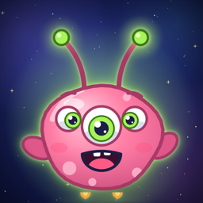

Alien Pasta Lab
Cook silly space food with Blorp
Privacy policy
Last updated November 6, 2026
Alien Pasta Lab is made for children and does not collect, store or share any personal information. It has no accounts, no advertising, no analytics, no tracking and no third-party code, and it makes no network connections of its own. Progress, stickers, outfits and settings are saved only on the device, and deleting the app deletes them. Nothing is sent to us.
Purchases
The one in-app purchase, The Whole Galaxy, sits behind a grown-ups' gate and is made and handled by Apple through the App Store. We never see payment details or Apple Account information. Apple's own privacy policy covers that purchase. The app asks the App Store only whether the purchase has been made, so that it can open the recipes, kitchens and friends.
Children
Because Alien Pasta Lab collects no personal information from anyone, it collects none from children. Links out of the game sit behind the grown-ups' gate.
This website
This website sets no cookies, uses no analytics and loads nothing from other sites. It is hosted on GitHub Pages; like any web host, GitHub processes basic request data, such as IP addresses, to deliver pages and keep them secure.
Changes
If this policy changes, the new version will be posted here with a new date.
Who we are
Alien Pasta Lab is made by Nicholas Paolino, an independent developer in the United States. Questions about privacy, or anything else: hello@wobbet.app.